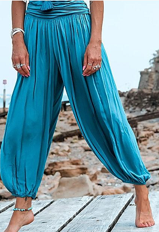

2 Ај! Аман, шетнала си, море, Јано
Ah, hélas, quand tu passais, Jana
(Dvanaesta Rukovet - 12ème guirlande :01:37 - 03:29 )

Tesan sokak u Velikom Tarnovu
 |
|
|
|
NOTES
|
[1] Нисам могао да нађем другу верзију ове прелепе песме, само другу сличну песму. Обе говоре о младој лепотици која ce шета, украшена бисерном огрлицом. [2] Ове две песме су изузетне по обиљу турцизама који се тамо налазе: Аман, сокак, чардак, бајадер, жам, шалваре, џанум, кузум, чаршија, ђердан, Турчe. „Гугл преводилац“ даје следеће турске еквиваленте за ове речи: Aman, sokak, çardak, bayader, cam, şalvar, janum, kızım, çarşı, gerdanlık, Türke. Стара српска поезија као да је тражила ове чуднозвучне речи. Вјероватно је само у муслиманској земљи (Босни, Kocoвy...) њихова будућност осигурана. Ипак, чак и Хрвати католици користе речи турског порекла. [3] Ове 2 песме сведоче о мирном суживоту 2 религије и 2 естетике: православна млада девојка (Јана-Стана или ако више волите Жана-Констансa) носи турске панталоне које држи појас украшен перлама. Она се шали са младим муслиманом који би радо размислио о отпадништву, да није убеђен да би му то донело само ругло од лепе хришћанке. Зато ће се задовољити несташним пољупцем ако нађе изгубљену огрлицу, као монах y другoj песми: Kalugere (version Mokranjac). |
Version Mokranjac Šetnala se kuzum Stana (Grupa Iskon) |
[1] Je n'ai pas trouvé d'autre version de ce beau chant, seulement un autre chant similaire. L'un et l'autre parlent d'une jeune beauté qui se promène, parée d'un collier de perles. [2] Ces deux chants sont remarquables par l'abondance des turcismes qu'on y trouve: Aman, sokak, čardak, bajader, žam, šalvare, džanum, kuzum, čaršija, đerdan,Turče. "Google translate" donne pour ces mots les équivalents turcs suivants: Aman, sokak, çardak, bayader, cam, şalvar, janum, kızım, çarşı, gerdanlık, Türke. (et les équivalents français, en l'aidant un peu: Amen, ruelle, tour/balcon, bayadère, verre, pantalon de femme, ami, jeune fille, marché, collier, petit Turc). La poésie serbe ancienne semblait rechercher ces mots aux sonorités étranges. Il n'y a sans doute qu'en terre musulmane (Bosnie, Kosovo...) que leur avenir soit assuré. Ceci dit, même les catholiques Croates utilisent des mots d'origine turque. [3] Ces 2 chants témoignent de la coexistence pacifique de 2 religions et de 2 esthétiques: l'orthodoxe jeune fille (Jana- Stana ou si l'on préfère, Jeanne-Constance) porte un pantalon turc maintenu par une ceinture ornée de verroterie. Elle plaisante avec un jeune musulman qui envisagerait volontiers l'apostasie, s'il n'était persuadé qu'elle ne lui vaudrait que de la moquerie de la part de la jolie chrétienne. Il se contentera donc d'un baiser s'il retrouve le collier perdu, comme le moine d'une autre chanson Kalugere (version Mokranjac). |